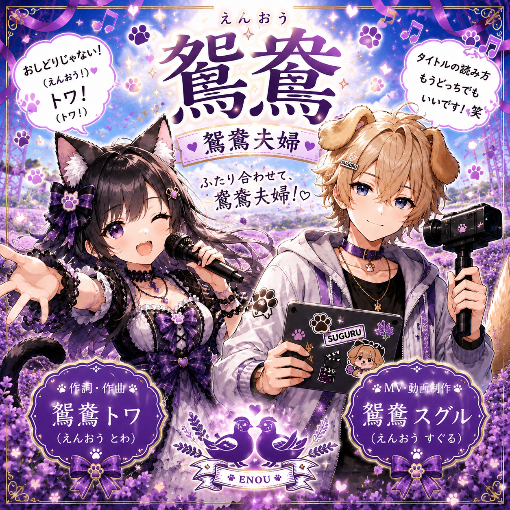

2026.09.07
SITE
ホームページを更新しました
VIDEO欄や利用規約、 お問い合わせページなどを追加しました。 少しずつ公式サイトらしく育ってきています。
2026.09.07
各音楽配信サービスにてアルバム『ラブちゅちゅ』の配信を開始しました。
2026.09.06
新曲『我流』をYouTubeにアップロードしました。
2026.09.06
YouTube公式アーティストになりました。
2026.09.04
各音楽配信サービスにてオリジナル楽曲の配信を開始しました。
インディーズアーティスト / クリエイター
音楽・小説・イラストを中心に活動しています。
オリジナル楽曲の制作・配信、小説の執筆、
キャラクターや作品世界のビジュアル制作など、
ジャンルにとらわれず自由に創作しています。
音楽では作詞・作曲・制作を担当。
小説では『ラベンダー畑、帰る場所。』を執筆しています。
活動 曲作り・小説作り・イラスト
相方 鴛鴦スグル🐶✨(専属MV担当)
ファンマーク
ファンネーム 住民
オリジナル楽曲を各音楽配信サービス、 YouTubeにて公開しています。
鴛鴦トワの楽曲をこちらで試聴できます。

PICK UP MUSIC
鴛鴦トワ・鴛鴦スグルのMV・楽曲をお楽しみください。
制作のこと、日々のこと。
鴛鴦トワの小さな記録。
2026.09.07
SITE
VIDEO欄や利用規約、 お問い合わせページなどを追加しました。 少しずつ公式サイトらしく育ってきています。
2026.09.06
MUSIC
またひとつ、 目標にしていた場所まで辿り着きました。 これからも自分のペースで作品を届けていきます。
2026.09.04
MUSIC
各音楽配信サービスで、 鴛鴦トワのオリジナル楽曲の配信が始まりました。
帰る場所、安心、家族、優しさ。
小さな幸せを描く物語。
楽曲ジャケットやキャラクターアートなど、
鴛鴦トワの活動で制作・使用しているビジュアルを掲載しています。
鴛鴦トワの各種活動はこちらから。